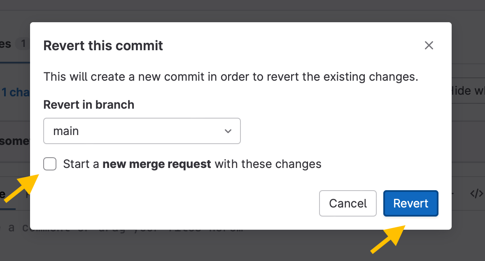
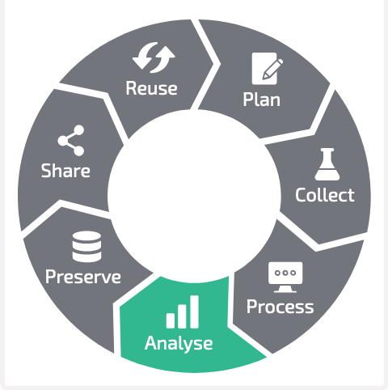
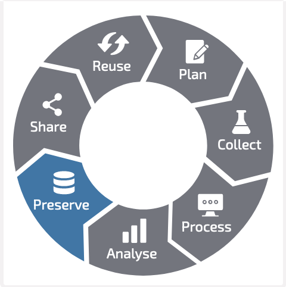

Previous slide Next slide Toggle fullscreen Open presenter view
DataPLANT Registration
If you do not have a DataPLANT account, please register at the DataPLANT website .
Role and consortium
Please add your Project/consortium (e.g. CEPLAS, SFB, TRR) and choose the role Guest
The command line
Find the command-line interface (CLI) on your system.
On Windows: Enter powershell into the explorer path
On MacOS: Search terminal via spotlight ( + ) or navigate to Applications -> Utilities -> Terminal
terminal , command-line interface (CLI) and powershell interchangeably.
Git Installation
Please install Git and Git LFS on your system
Configuration of Git
Check the git user configuration on your system, by executing
git config --global --get-regexp user
This should prompt two linesuser.name <Your Name>user.email <Your Email>
Git configuration
Set the git user configuration on your system, by executing
Your name
git config --global user.name "Your Name"
Your email address
git config --global user.email "Your Email"
ARCitect Installation
Please follow the instructions to install the latest version of ARCitect.
Swate Installation
Please follow these instructions to install the latest version of Swate.
Have a simple text editor ready
Windows Notepad
MacOS TextEdit
Recommended text editor with code highlighting, git support, terminal, etc: Visual Studio Code
Contributors
Slides presented here include contributions by
Block 1 Welcome and Intro
Welcome
Please introduce yourselves
Who are you?
Where are you?
What was your motivation to join this workshop?
Summarize your study design
Name your favorite assay or measurement technique
This workshop session will be recorded
I will cut out all participant chat, video, audio, etc. or ask for permission before sharing any recordings
Let's make this an interactive workshop
Please feel free to use the chat, raise hands, discuss, etc.
Goal
Create ARCs to share research data
how and less on why
Tentative agenda
Time
Topics
13:00 - 14:00
Welcome and intro
14:00 - 14:15
Short break
14:15 - 16:00
ARC and ARCitect Hands-on
16:00 - 16:15
Short break
16:15 - 17:00
Q & A
DataPLANT
NFDI: "Nationale Forschungsdaten Infrastruktur" www.nfdi.de
Funded since end of 2020
Data Stewardship between DataPLANT and the community
Annotated Research Context (ARC)
What does an ARC look like?
What does an ARC look like?
What does an ARC look like?
What does an ARC look like?
What does an ARC look like?
What does an ARC look like?
Contributors
Slides presented here include contributions by
Registration
Did everyone sign-up at the DataHUB?
You just received your data
Goal
Structure,
(Annotate, and)
Share your experimental data.
Initiate the ARC folder structure
Create a New ARC (2)
Select a location and name it TalinumPhotosynthesis
Your ARC's name
for the ARC folder on your machine
to create your ARC in the DataHUB at https://git.nfdi4plants.org/<YourUserName>/<YourARC> (see next steps)
as the identifier for your investigation
https://git.nfdi4plants.org/<YourUserName>/<YourARC>. Otherwise you will sync to that ARC.
Add a description and title to the investigation
Click on the ARC's name
Add a title (e.g. "Talinum Photosynsthesis")
Add a description
Click "Update" to save your changes
Add contributors
In the section "People" click "ADD PERSON" to add at least one contributor
Add contributor details
First Name
Last Name
Email
Affiliation
Add a study
by clicking "Add Study" and entering talinum_drought as identifier for the study
Study panel
In the study panel you can add
general metadata,
people, and
publications
data process information
Add a protocol to the study
Click "Add Protocol" in the sidebar to add a protocol to the study
Adding protocols
You can either
directly write a new protocol within the ARCitect or
import an existing one from your computer
From the demo data, transfer the lab notes stored in plant_material.txt to the talinum_drought study.
Add an assay to the ARC
Click "Add Assay" in the sidebar
Name and link the assay
Enter rnaseq as the identifier
Link the assay to the study talinum_drought
In the assay panel you can
link or unlink the assay to studies, and
define the assay's
measurement type
technology type, and
technology platform.
add data process information
Add the following information:
Measurement Type: Gene Expression Analysis
Technology type: Next Generation Sequencing
Technology platform: Illumina HiSeq 2500
Click "Update" to save your changes
Add protocols and datasets
In the file tree you can
add a dataset andprotocols associated with that dataset
Import the demo dataset to the ARC
Cick "Add Dataset"
Select the *.fastq.gz files from the demo data
Import the protocols
From the demo data, import the lab notes related to the rnaseq assay:
RNA_extraction.txt
Illumina_libraries.txt
NGS_SampleSheet.xlsx
Collaborate and share
Login to the DataHUB
Click Login (1) in the sidebar to login to the DataHUB.
https://git.nfdi4plants.org ) and asks you to login, if you are not already logged in.
Versions: Connection to the DataHUB
To communicate with the DataHUB, navigate to Versions (6)
Versions
The versions panel allows you to
store the local changes to your ARC in form of "commits",
sync the changes to the DataHUB, and
check the history of your ARC
Connection to the DataHUB
If you are logged in, the versions panel shows
your DataHUB's Full Name and eMail
the URL of the current ARC in the DataHUB https://git.nfdi4plants.org/<YourUserName>/<YourARC>
Upload your ARC to the DataHUB
Enter a "commit message" to shortly describe the changes to your ARC
Click "COMMIT" to save your changes locally
Click "UPLOAD" to upload your ARC to the DataHUB
Check whether your ARC was uploaded successfully
sign in to the DataHUBCheck your projects
Received two emails from "GitLab" about a failed pipeline?
Pipeline Failed
a "continuous quality control" (CQC) pipeline validates your ARC
This fails if one of the following metadata items is missing:
Investigation Identifier
Investigation Title
Investigation Description
Investigation Person Last Name
Investigation Person First Name
Investigation Person Email
Investigation Person Affiliation
Pipeline Failed
If the pipeline has failed once, it is disabled by default
Reactivate the CQC pipeline
To reactivate it and let the DataHUB validate your ARC again:
navigate to CI/CD setting <arc-url>/-/settings/ci_cd
expand "Auto DevOps"
check box "Default to Auto DevOps pipeline"
Save changes
Collaborate and share
Invite collaborators
Unless changed, your ARC is set to private by default
To collaborate, you can invite lab colleagues or project partners to your ARC
Click on Project Information in the left navigation panel
Click on Members
Click on Invite members
Search for potential collaborators
Select a role
Choosing the proper role
Guests
Reporters read access to your ARC. This is recommended for people you ask for consultancy.
Developers read and write access , but cannot maintain the project on the DataHUB, e.g. inviting others.
Maintainers
A detailed list of all permissions for the individual roles can be found here
Congratulations!
You have just shared your ARC with a collaborator.
Add the remaining data
Add another assay (metabolomics)
Add the protocols
Add the dataset
Go to the Versions panel
Add a "commit message"
Upload your changes to the DataHUB
Check the progress of your ARC
Navigate to Versions
Check the History panel at the bottom
Deleting an ARC
Click on Settings in the sidebar of your ARC
Navigate to the general (1) settings
In the advanced section (4) you can delete your ARC
Follow your progress in the DataHUB
Open your ARC in the DataHUB
In the sidebar on the left, navigate to Repository Commits
There you find a chronological list of syncing messages together with who synced and when
Undo latest changes
Click on the latest (i.e. uppermost) commit.
In the top-right corner select Revert from the drop-down menu Options.
Undo latest changes
Un-check the box "Start a new merge request with these changes".
Click "Revert"

Update your local ARC
If your ARC has changed in the DataHUB (by yourself or collaborators), you need to update your "local" version of the ARC.
Navigate to Versions
Click "Download"
Contributors
Slides presented here include contributions by
Tentative agenda
Time
Topics
13:00 - 14:00
Welcome and intro
14:00 - 14:15
Short break
14:15 - 16:00
ARC and ARCitect Hands-on
16:00 - 16:15
Short break
16:15 - 17:00
Q&A
Preparation for next week
Please try to prepare your own ARC
Please install SWATE
Five-Finger-Feedback
Welcome back
Welcome and feedback
Metadata and ISA
Swate Hands-On
ARC Ecosystem Summary
Q & A
Feedback
Viola's PhD Project
Exercise: Take 5 minutes to note down the metadata
Viola investigates the effect of the plant circadian clock on sugar metabolism in W. mirabilis . For her PhD project, which is part of an EU-funded consortium in Prof. Beetroot's lab, she acquires seeds from a South-African botanical society. Viola grows the plants under different light regimes, harvests leaves from a two-day time series experiment, extracts polar metabolites as well as RNA and submits the samples to nearby core facilities for metabolomics and transcriptomics measurements, respectively. After a few weeks of iterative consultation with the facilities' heads as well as technicians and computational biologists involved, Viola receives back a wealth of raw and processed data. From the data she produces figures and wraps everything up to publish the results in the Journal of Wonderful Plant Sciences.
Viola investigates the effect of the plant circadian clock on sugar metabolism in W. mirabilisPhD project, which is part of an EU-funded consortium in Prof. Beetroot's lab, she acquires seeds from a South-African botanical society. Viola grows the plants under different light regimes, harvests leaves from a two-day time series experiment, extracts polar metabolites as well as RNA and submits the samples to nearby core facilities for metabolomics and transcriptomics measurements, respectively. After a few weeks of iterative consultation with the facilities' heads as well as technicians and computational biologists involved, Viola receives back a wealth of raw and processed data. From the data she produces figures and wraps everything up to publish the results in the Journal of Wonderful Plant Sciences.
project design
researcher
institute and project
biological context
research question
purpose of data collection
...
experimental processes
origin and nature of the biological material
lab protocols
instrument model
...
data-analytical processes
algorithms
tools
software versions and dependencies employed
...
bibliographic
Title
Publication date and title
Description
Author
Contacts
Keywords
...
legal or administrative
data origin, ownership, rovenance,
licensing
ethical aspects
...
technical
expected data volume
storage location
file formats
...
Findable
metadata names the content of the data
basis for search engines
makes it categorizable for people and machines
Accessible
information about origin
location of storage
access rights
Interoperable
metadata identifies software and file formats
required conversions between file formats
Reusable
obtain and reuse research data according to clear rules described in licenses
ARC builds on ISA
isa.<>.xlsx files within ARCs
Study and assay files are registered in the investigation file
Output building blocks:
Sample Name
Raw Data File
Derived Data File
Annotation by flattening the knowledge graph
Low-friction metadata annotation
Familiar spreadsheet, row/column-based environment
Annotation principle
Low-friction metadata annotation
Familiar spreadsheet, row/column-based environment
Adding new building blocks (columns)
Swate can be used for the annotation of isa.study.xlsx and isa.assay.xlsx files
Annotation Building Block types
Source Name (Input)
Protocol Columns
Protocol Type, Protocol Ref
Characteristic
Parameter
Factor
Component
Output Columns
Sample Name, Raw Data File, Derived Data File
Let's take a detour on Annotation Principles | slides
Ontology term search
Enable related term directed search to directly fill cells with child terms
Fill your table with ontology terms
Hierarchical combination of ontologies
Checklists and Templates
Metadata standards or repository requirements can be represented as templates
Facilities can define their most common workflows as templates
Directly import templates via Swate
DataPLANT curated
Community templates
Contributors
Slides presented here include contributions by
Goals
Get familiar with ISA metadata and Swate
Annotate data in your ARC
Check Swate installation
Swate is installed :
Open Excel (online or Desktop)
Go to the Insert tab: Click the arrow next to "My Add-ins". There you should be able to select Swate.
Go to the Data tab: you should see the Swate (Core) add-in.
Swate standalone work in progress and likely to change)
Have a simple text editor ready
Windows Notepad
MacOS TextEdit
Recommended text editor with code highlighting, git support, terminal, etc: Visual Studio Code
Download the demo data
Open the ARCitect
Login (1) to your DataHUB account
Navigate to Download ARC (4)
Download the demo data
Search for Talinum-CAM-Photosynthesis
Click the download button, select a location and open the ARC.
Where we left off last time
Today we want to
annotate the experimental data
Swate hands-on with demo data
Swate Overview
Let's annotate the plant samples first
Navigate to the demo ARC.
Open the lab notes studies/talinum_drought/protocols/plant_material.txt in a text editor.
Open the empty studies/talinum_drought/isa.study.xlsx workbook in Excel.
Create an annotation table
Create a Swate annotation table via the create annotation table button in the yellow pop-up box OR click the Create Annotation Table quick access button.
Source Name) and one output (Sample Name) column
Add a building block
Navigate to the Building Blocks tab via the navbar. Here you can add Building Blocks to the table.
Instead of Parameter select Characteristic from the drop-down menu (A)
Search for organism in the search bar (B). This search looks for suitable Terms in our Ontology database.
Select the Term with the id OBI:0100026 and,
Click Add building block .
two hidden.
Insert values to annotate your data
Navigate to the Terms tab in the Navbar
In the annotation table, select any number of cells below Characteristic [organism]
Click into the search field in Swate.
organism showing in a field in front of the search fieldorganism
In the search field, search for "Talinum fruticosum"
Select the first hit and click Fill selected cells with this term
Add a building block with a unit
In the Building Blocks tab, select Parameter , search for light intensity exposure and select the term with id PECO:0007224.
Check the box for This Parameter has a unit and search for microeinstein per square meter per second in the adjacent search bar.
Select UO:0000160.
Click Add building block .
three hidden.
Insert unit-values to annotate your data
In the annotation table, select any cell below Parameter [light intensity exposure] and add "425" as light intensity.
425.00 microeinstein per square meter per second
Showing ontology reference columns
Hold Ctrl and click the Autoformat Table quick access button to adjust column widths and un-hide all hidden columns.
Update ontology reference columns
Click the Update Ontology Terms quick access buttons.
Parameter [light intensity exposure] are updated with the id and source ontology of the microeinstein per square meter per second unit.
Your ISA table is growing
At this point. Your table should look similar to this:
Hiding ontology reference columns
Click the Autoformat Table quick access button without holding Ctrl to hide all reference columns.
Exercise
Try to add suitable building blocks for other pieces of metadata from the plant growth protocol (studies/talinum_drought/protocols/plant_material.txt).
Let's annotate the RNA Seq data
Navigate to the demo ARC.
Open the lab notes assays/rnaseq/protocols/RNA_extraction.txt in a text editor.
Open the empty assays/rnaseq/isa.assay.xlsx) workbook in Excel.
Use a template
Navigate to Templates in the Navbar and click Browse database in the first function block.
Search for RNA extraction and click select
You will see a preview of all building blocks which are part of this template.
Click Add template to add all Building Blocks from the template to your table, which do not exist yet .
Adding / Updating unit references
Sometimes you need to add or update the unit of an existing building block.
Select any number of rows of the Parameter [biosource amount] building block to mark it for the next steps.
Open the Building Blocks tab
In the bottom panel "Add/Update unit reference to existing building block", search for the unit "milligram". Select the unit term and click Update unit for cells .
Click the Update Ontology Terms quick access button , to update the reference columns.
Remove building blocks
If there are any Building Blocks which do not fit your experiment you can use the Remove Building Block quick access button to remove it including all related (hidden) reference columns.
New process, new worksheet
Add a new sheet to the assays/rnaseq/isa.assay.xlsx) workbook.
Add the template "RNASeq Assay"
Exercise
Try to fill the two sheets with the protocol details:
assays/rnaseq/protocols/RNA_extraction.txt andassays/rnaseq/protocols/Illumina_libraries.txt
Your ISA table is ready
Go ahead, adjust the Building Blocks you want to use to describe your experiment as you see fit.
A small detour on "Excel Tables"
Swate uses Excel's "table" feature to annotate workflows. Each table represents one process from input (e.g. plant leaf material) to output (e.g. leaf extract).
Example workflows with three processes each:
Plant growth sampling extraction
Measured data files statistical analysis result files
workbook (e.g. "isa.assay.xlsx" )
worksheet (e.g. "plant_growth" )
table (e.g. "annotationTable" )
Annotation with ARCitect
Contributors
Slides presented here include contributions by
ARC Ecosystem Demo
"A FAIR RDM journey along a (mutable) data life cycle"
October 11th, 2023
Dominik Brilhaus, CEPLAS Data Science
Collect
Process (e.g. annotate)
Analyse 
Preserve 
Preserve and publish
Share and collaborate
Reuse
Mutable data life cycle
Plan (ARC scale)
Contributors
Slides presented here include contributions by
- Invite participants to give feedback
- If feasible, collect transparently on a board or in a markdown pad, etc.
# Five-Finger-Feedback
...was too short | I'm happy with... | I did not like at all ...| This idea or advice was good: ... | I really liked ...
---|---|---|---|---
... | ... | ... | ... | ...
Exercise: Association map
Online: Let participants annotate (via video conference tool)
Presence: Draw map on (white) board
<style scoped>
section p img{
/* padding-left: 230px */
}
</style>
combination of ISA (Characteristics, Parameter, Factor) and a biological or technological ontology (e.g. temperature, strain, instrument model) gives the flexibility to display an ontology term, e.g. temperature, as a regular process parameter or as the factor your study is based on (Parameter \[temperature\] or Factor \[temperature\]).
- create study folder
- take a picture (add more demo pictures)
- create assay folder
- add fastq data
- annotate plant samples
- annotate rnaseq extraction
- run fastqc
- receive back results
1. Validation: CQC on each DataHUB commit
2. Publication: DOI
1. Validation: CQC on each DataHUB commit
2. Publication: DOI
- via ARC https://arcregistry.nfdi4plants.org/arcsearch
- via ISA https://arcregistry.nfdi4plants.org/isasearch
- Invite other (demo) account
- add notes from there
- **ARCitect**: Create empty ARC
- description
- author
- first name
- last name
- email
- **ARCitect**: Upload ARC to DataHUB
- **DataHUB**
- Discuss, collect meeting minutes in Wiki
- design / plant investigation (datahub wiki, issues)